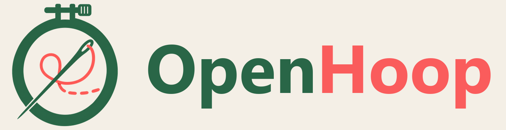
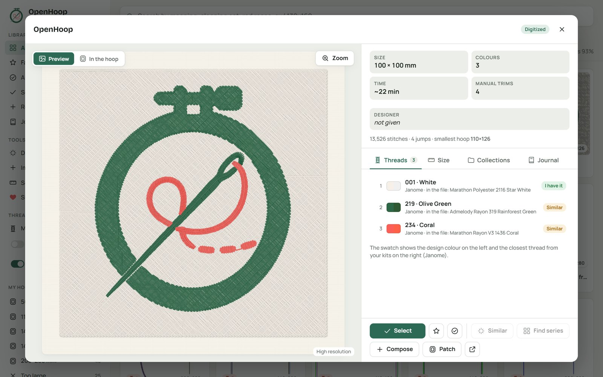
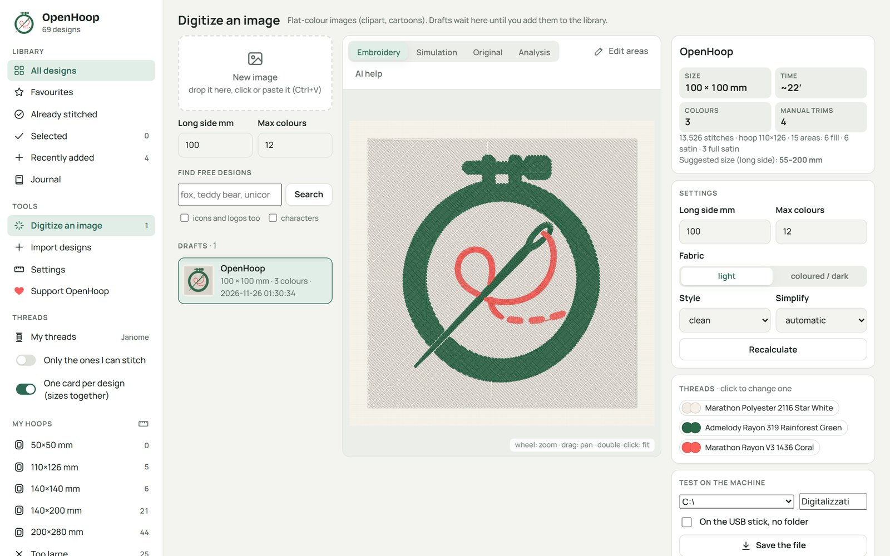

Your embroidery designs, finally in order.
OpenHoop is a free, open-source organizer for machine embroidery designs. Tidy up years of downloads, find any design in seconds, try other thread colours and send it to your machine in the right format.
Windows 10/11 · no account · no subscription · English, Italiano, Français, Español
Search by meaning, open a design, point at a part and click to try another thread. The designs shown were made with OpenHoop's own digitizer.
What it does
🗂️ Sorts your libraryOne file per design, duplicates removed, sorted by theme with thumbnails. Your original files are never moved or changed.
🔎 Finds anythingBy name, by size («130x180») or by meaning: «sleeping cat», «red roses», «christmas».
🎨 Try thread coloursPoint at a part of the design and click to try another thread from your brand. Save it as a colour version.
🧵 Ready for your machinePES, JEF, DST, VP3, EXP, XXX straight to the USB stick, with smart resize that recalculates the stitches.
⏱️ Real numbersReal size, stitching time, colours, and how many threads you will trim by hand. Shopping list of missing spools.
📥 Smart importZips, folders, links: duplicates flagged side by side, instructions and colour charts kept next to the design.
🛡️ Patch maker & letteringTurn any design into a patch, add lettering with 140 embroidery fonts, digitize simple images.
🔄 Updates itselfOne click when a new version is out. Everything stays on your computer.
A look inside




Install in 3 steps
- Download the zip with the green button above and unzip it where you like (for example
C:\OpenHoop). - Double-click
OpenHoop.exe. The first time it installs what it needs (about 8 GB, 15–40 minutes). If Windows says «Windows protected your PC», click More info → Run anyway: the program is new and not signed. - Start it from the desktop icon, choose your language, your design folders and your machine, and let it build your tidy library.
Early stage: tested on stitch-outs with a Brother machine (PES). Other machines are supported on paper — tell us how it went!
🇮🇹 In italiano — OpenHoop è un programma gratuito e open source per chi ricama a macchina: mette in ordine migliaia di file da ricamo, li trova per nome, misura o significato, ti fa provare altri colori dei fili direttamente sul disegno ed esporta nel formato della tua macchina. Niente account, niente abbonamenti. Scaricalo qui.